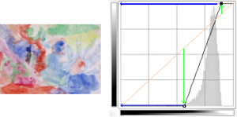
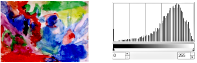

The Curves tool is the most sophisticated tool for changing the color, brightness, contrast or transparency of the active layer or a selection. While the Levels tool allows you to work on Shadows and Highlights, the Curves tool allows you to work on any tonal range. It works on RGB images.
-
You can access this command from the main menu through → .
-
You can also access it by clicking the tool icon
 in the Toolbox if this tool has been installed there. For this, please
refer to Section 6.13, “Toolbox”.
in the Toolbox if this tool has been installed there. For this, please
refer to Section 6.13, “Toolbox”.
- Presets, Blending Options, Preview, Merge filter, Split view
-
![[Note]](images/note.png)
Note These options are described in Section 8.1.2, “Colors Common Features”.
- Channel
-
There are five options:
- Value
-
The curve represents the Value, i.e. the brightness of pixels as you can see them in the composite image.
- Red, Green, Blue
-
The curve represents the quantity of color in each of the three RGB channels. Here, dark means little of the color. Light means a lot of the color.
- Alpha
-
The curve represents the opacity of the pixels. Dark means very transparent. Light means very opaque. Your image or active layer must have an Alpha channel for this option to be enabled.
- Reset Channel
-
This button deletes all changes made to the selected channel and returns to default values.
-
Linear
,
Non-Linear
,
 Perceptual
Perceptual
-
These three buttons determine whether the tone reproduction (TRC) will be displayed using a linear, non-linear, or perceptual X axis.
- Linear histogram , Logarithmic histogram
-
These two buttons determine whether the histogram will be displayed using a linear or logarithmic Y axis. For images taken from photographs, the linear mode is most commonly useful. For images that contain substantial areas of constant color, though, a linear histogram will often be dominated by a single bar, and a logarithmic histogram will often be more useful.
You can also use the same options in the Tool Options dialog if Curves has been enabled as a tool. This grayed out histogram is not displayed by default.
- Main Editing Area
-
-
The horizontal gradient: it represents the input tonal scale. It, too, ranges from 0 (black) to 255 (white), from Shadows to Highlights. When you adjust the curve, it splits into two parts; the upper part then represents the tonal balance of the layer or selection.
-
The vertical gradient: it represents the destination, the output tonal scale. It ranges from 0 (black) to 255 (white), from Shadows to Highlights.
-
The chart: the curve is drawn on a grid and goes from the bottom left corner to the top right corner. The pointer x/y position is permanently displayed in the top left part of the grid. By default, this curve is straight, because every input level corresponds to the same output tone. GIMP automatically places a point at both ends of the curve, for black (0) and white (255).
If you click the curve, a new point is created. When the mouse pointer goes over a point, it takes the form of a small hand. You can click-and-drag the point to bend the curve.
If you click outside the curve, a point is also created, and the curve includes it automatically. If you Ctrl-click outside the curve, the Y-coordinate snaps to the original curve: this is particularly useful for adding points along the curve.
Inactive points are white. The active point is black. You can activate a point by clicking it. You can also swap the point activation by using the Left and Right arrow keys of your keyboard.
Two points define a curve segment which represents a tonal range in the layer. You can click-and-drag this segment (this creates a new point). Of course, you can't drag it beyond the end points.
To move a point, there are several possibilities to fine tune the point position:
-
Click-and-drag the point.
-
Using Up and Down arrow keys (Holding the Shift down lets you move it by increments of 15 pixels) to move the point vertically.
-
Ctrl + click-and-drag allows you to move the point along the curve in its segment, independently of the pointer position.
-
Another way to move point is using the “Input” and “Output” spin buttons: see below.
To delete all points (apart from both ends that can't be deleted), click the button. To delete only one point, move it beyond any adjacent point horizontally.
Meanwhile, on the canvas, the mouse pointer has the form of an eye-dropper. If you click a pixel, a vertical line appears on the chart, positioned to the source value of this pixel in the selected channel. If you Shift-click, you create a point in the selected channel. If you Ctrl-click, you create a point in all channels, possibly including the Alpha channel. You can also Shift-drag and Ctrl-drag: this moves the vertical line and the point appears when releasing the mouse left button.
The histogram of the active layer or selection for the selected channel is represented in gray in the chart. It's only a reference and is not updated during treatment.
-
-
- Input, Output
-
These spin buttons allow setting the selected point coordinates numerically and accurately if needed.
- Type
-
Control points can be either Smooth (default: all points are smooth) or Corner points. These Corner points result in a sharp angle. They are displayed using a diamond shape. You can toggle between Smooth and Corner for the selected point.
- Curve type
-
- Smooth
-
This Smooth option affects the whole curve, not only the selected point as above.
- Free Hand
-
With this mode, you can draw a free hand line that you can smooth by clicking the Smooth Curve type.
We create points and segments on the curve and we move them to shape the curve. This curve maps “input” tones of the active layer or selection to “output” tones.
Moving the point a pixel upwards makes this pixel brighter.

Moving the point upwards
Making the curve more horizontal forces all the input tonal range to occupy a shrunk output tonal range.
The histogram shows the compression of pixels into the output range. Darkest and brightest pixels disappeared: contrast decreases.
Figure 16.139. Making the curve more horizontal

Make the curve more horizontal

The resulting histogram
Moving the upper end point to the left and the lower end point to the right is the same as moving the white slider to the left and the black slider to the right in the Levels tool: all pixels whose value is more than the white point (the flat part of the curve) are made white (more colored / more opaque according to the selected channel). All pixels whose value is less than the black point (the lower flattened curve) are made black (black / completely transparent). Pixels corresponding to points of the curve that have moved up are made lighter. Pixels corresponding to points of the curve that have moved down are made darker (green arrows). All these pixels will be extended to the whole output tonal range.
The histogram shows the extension of values, from black (0) to White (255): contrast is increased. Since the Value channel is selected, changes affect all color channels and colors increase.
Figure 16.140. Making the curve more vertical

Make the curve more vertical

Result and its histogram

Inverted curve
Black is made White (fully colored / fully opaque). White is made black (black, fully transparent). All pixels adopt the complementary color. Why that? Because subtracting the channel values from 255 gives the complementary color. For example: 19;197;248 a sky blue gives 255-19; 255-197; 255-248 = 236;58;7, a bright red.

Contrast enhanced
Contrast is increased in mid tones because the curve is steeper there. Highlights and Shadows are increased but contrast is slightly less in these areas because the curve is flatter.